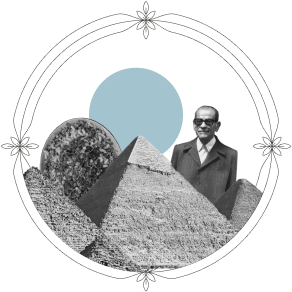

Paris, France

Paris - 1930
O train de luxe!
- by Louise Maréchal
scroll down

This is an interactive story about the Orient Express told by a fictional character called Louise Maréchal.
Throughout the story you will find the following icons.
Discover tips and tricks and learn some essential travel advice.
Collect memories and create your own custom travel journal.
There I stood, on the platform of Paris's Gare de Lyon, as a young Parisian governess to a wealthy businessman's family, accompanying them on their journey to Cairo. The clock struck nine in the evening, and the train was set to depart in half an hour.

Behind me I overheard two gentlemen talking enthusiastically about the upcoming adventure and about the trains' history.
Say, sleeper trains originated in America, you know.
Oh, I reckon? I thought it was more of a European affair.
Not at all! But then along came this Belgian engineer, Georges Nagelmackers. Brought 'em here and made 'em downright lavish! Started up the Compagnie Internationale des Wagons-Lits, too.
Ah, that fella!


Day 1
Paris, France
It was busy on the platform, such a varied range of people all waiting for the Orient Express!
scrollhover to find out

diplomats and state leaders


stars and aristocrats

artists and writers
traders from the East
Indian Maharajas


As the grand Orient Express rolled in, its sleek, polished exterior hinted at the luxurious journey ahead. Our baggage was stored in the luggage van as an attendant showed us to our compartments.
We were ready to go!
The luxury of the Orient Express was something I had never seen before. The attention to detail was amazing. I shared a compartment with the daughter, while the mother and father each had their own.


Day 2
Somewhere in Italy
An extensive breakfast & sumptuous food
In the dining car, we were greeted with colourful carpets, white table linen, champagne buckets, crystal glasses and carafes, silver cutlery and bone china plates.
The Compagnie Internationale des Wagons-Lits was well known for its sumptuous food. In the evening we were served an excellent menu. It makes my mouth water just remembering it.
click the mealshover to find out
soufflé alaska
Asperges à l'Italienne
cuissot de veau ecarlate
corbeille de fruits
consommé Xavier

saumon en bellevue
drag your favorite meal in the journal
Day 3
Somewhere in Yugoslavia
Paris to Constantinople in just 3 days
The continuous travel, both day and night, made the journey from Paris to Constantinople surprisingly comfortable and enjoyable, despite my initial concerns.


add your favorite city to the journal
The further we went ...
The more exotic the surroundings became.
Day 4
Constantinople, Turkey
The Sirkeci station build in 1890
At last we arrived at the final destination: Sirkeci station in Constantinople. This stunning station was built in 1890 by the German architect August Jachmund especially for the Orient Express. It was a magical blend of elements from east and west.
add this moment to your journal
Western Architecture
Eastern Architecture


Day 5
Constantinople, Turkey
Pera Palace Hotel
In Constantinople, we stayed the night at the Pera Palace Hotel, built by the Compagnie Internationale des Grands Hôtels belonging to Georges Nagelmackers. We continued our journey with the Taurus-Express, also owned by the Compagnie Internationale des Wagons-Lits.
I have to admit that our journey from Constantinople to Cairo was far less of a pleasure than the first part. It also took about as long. But we were swept away by the foreign and exotic culture, so I really had no reason to complain.
To get from Constantinople to Cairo, we had to take several trains and ships, and even a bus. So the whole journey from Paris to our final destination took 4 trains, 2 ships, one bus and 6 days. This day and age that seems unthinkable, but at the time it was really fast!

Day 6
Cairo, Egypt
I feared the journey
The reason why I feared the journey was due to the infamous incident of the Orient Express getting stranded in a severe snowstorm. The train was stuck for 5 days with temperatures inside dropping to -10°C, an event that inspired Agatha Christie's “Murder On the Orient Express”.
click to collect their signatures for the journal
After 6 days, we finally arrived in Cairo, time for me to reflect back on my journey.
Discover your personal travel journal below.